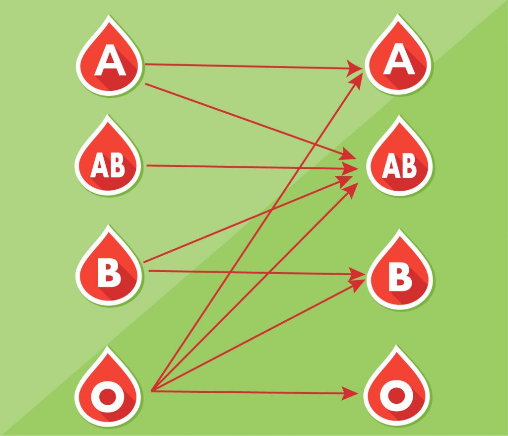

There are several parameters that determine the eligibility of an individual to donate blood. Guidelines laid down by the Ministry of Health, Government of India have to be followed by blood banks and organizations conducting blood donation camps
Overall health- The donor must be fit and healthy, and should not be suffering from transmittable diseases.
Age and weight- The donor must be 18–65 years old and should weigh a minimum of 50 kg.
Pulse rate- Between 50 and 100 without irregularities.
Hemoglobin level- A minimum of 12.5 g/dL.
Blood pressure- Diastolic: 50–100 mm Hg, Systolic: 100–180 mm Hg.
Body temperature- Should be normal, with an oral temperature not exceeding 37.5 °C.
The time period between successive blood donations should be more than 3 months.
Individuals under certain conditions are deemed ineligible to donate blood:
- A person who has been tested HIV positive.
- Individuals suffering from ailments like cardiac arrest, hypertension, blood pressure, cancer, epilepsy, kidney ailments and diabetes.
- A person who has undergone ear/body piercing or tattoo in the past 6 months.
- Individuals who have undergone immunization in the past 1 month.
- Individuals treated for rabies or received Hepatitis B vaccine in the past 6 months.
- A person who has consumed alcohol in the past 24 hours.
- Women who are pregnant or breastfeeding.
- Individuals who have undergone major dental procedures or general surgeries in the past 1 month.
- Women who have had miscarriage in the past 6 months.
- Individuals who have had fits, tuberculosis, allergic disorders in the past.
- Individuals who currently have asthma with active symptoms, and severe asthma patients.
Your Blood Group
The first step is to know your blood group and to which blood group your blood matches for donation. See the blood donation chart below

Blood O can donate red blood cell to anybody its the Universal Blood Donor.
Blood group AB can recieve red blood cell from anybody its the Universal Recipient.
Blood A and give blood to A’s and AB’s only.
Blood B can give blood to B’s and Ab’s only.
In addition to the A and B antigens, There is a third antigen called the Rh factor, which can be either present (+) or absent ( – ). In general, Rh-negative blood is given to Rh-negative patients, and Rh positive blood or Rh negative blood may be given to Rh positive patients.